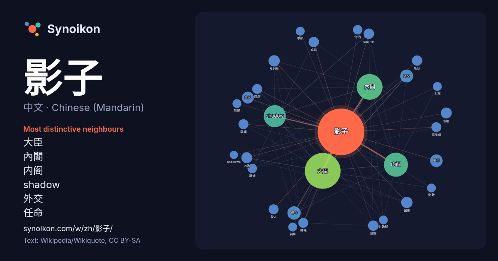

中文 · Chinese (Mandarin) · word of the day list
影子
“shadow” · The words found around it in 1013 instances from Chinese (Mandarin) Wikipedia, Wikiquote.

Most distinctive neighbours
- 大臣 94×
- 內閣 59×
- 内阁 54×
- shadow 49×
- 外交 14×
- 任命 14×
- 反對黨 14×
- 银行 13×
- 內政 13×
- cabinet 12×
- 議院 11×
- 部长 11×
- 价格 11×
- 愛人 11×
- 姊妹 11×
- 出任 11×
- 就業 10×
- 乐队 10×
- 領袖 9.7×
- 首席 9.3×
× = how many times more often than in general Chinese (Mandarin) Wikipedia text.
Most frequent neighbours
- 大臣 131
- 內閣 68
- 内阁 59
- shadow 50
- 政府 26
- 任命 18
- 外交 17
- 教育 16
- 银行 16
- 一個 15
- 他的 15
- 沒有 14
- 部长 14
- 出任 13
- 反對黨 13
- 担任 13
- 擔任 13
- 价格 12
- 內政 12
- cabinet 11
In context
- 影，又稱影子、陰影，是從光源直射的光被不透明的物體阻擋時形成的深色範圍。當光源置於物體前方時，影會佔據物體背後三維空間的體積。影的截面是一個二維的剪影，是物體阻擋光線的反向投影。 點光源（英语：point source）只會投射出簡單的影，稱之為「本影」。對於非點光源或擴展光源產生的影，可以分為本影 Wikipedia snippets · 影
- 影子）轮回到300年前其最初登上日都岛的现世，阻止了影子事件的一切起源（阻碍人类波稻与影子鲸鱼的接触，以及影子潮消除了影子鲸鱼），令历史重置且彻底消除了「影子現象」。 潮（ウシオ，聲：永瀨安奈） 小舟潮的影子，复制自7月18日。遇到本尊并一同杀死一只野生影子 Wikipedia snippets · 夏日時光 (漫畫)
- 在洞喻中，柏拉图描述了一群人，他们一生都被锁链拴在洞穴的墙壁旁，面对着一堵空白的墙壁。这些人观察从他们身后火堆前经过的物体投射在墙上的影子，并为这些影子命名。影子是囚犯们的现实，但并不是真实世界的准确呈现。影子代表我们通常可以凭借感官感知的现实片段，而阳光下的物体则代表我们只能通过理性感知的物体真实形态。存在三个更高的层 Wikipedia snippets · 地穴寓言
- er）」單行本累積總銷量突破3000万冊。從2012年起首次宣佈動畫化，至今推出三季動畫。總集篇劇場版全三章於2016年9月在日本上映。新作劇場版《影子籃球員 LAST GAME》於2017年3月18日在日本上映。 2011年9月宣佈改編成電視動畫。由Production I Wikipedia snippets · 黑子的籃球
- Z-Library（縮寫z-lib，前身為BookFinder）是一個影子圖書館計劃，用戶可在網站上上传下載各類期刊文章及書籍。它原是创世纪图书馆的镜像網站，之後規模不斷擴張。 它原是创世纪图书馆的镜像网站，並從該图书馆獲得大部分館藏。但它的一些館藏由用戶自行上載，並且不為创世纪图书馆所收藏。Z-L Wikipedia snippets · Z-Library
- 安娜的档案（Anna's Archive）是一个用于检索影子图书馆的开源搜索引擎，由使用化名“Anna”的人士在执法部门于2022年采取行动关闭Z-Library后不久推出。该网站汇集来自Z-Library、Sci-Hub和Library Genesis（LibGen）等来源的记录。该网站自称是“人类历史上最大的真正开放图书馆”， Wikipedia snippets · 安娜的檔案
- 影子内阁（英語：Shadow Cabinet）是指某些行議會制的民主国家，其在野党为准备上台执政而设的预备内阁，設有與內閣當局各部對應的諸位「影子大臣」或「影子部長」；往往由下议院中最大的反对党领袖，物色下院中有影响力的同党议员，按内阁形式组建而成。这种制度由英国保守党首创，后为一些英联邦西敏制国家所采用。 Wikipedia snippets · 影子内阁
- 影子計劃（Shadow Project），簡稱「SP」，是來自臺灣高雄的饒舌團體，成軍於2018。由「Ye!!ow」（椰肉）、「Bu$Y」（忙碌）組成。2018年以一曲〈過熱〉於地下饒舌圈獲得關注，進而在2019年發行首張創作專輯《過熱Overlitt》正式出道，音樂作品囊括流行抒情、嘻哈、搖滾、台 Wikipedia snippets · 影子計劃
More Chinese (Mandarin) words
Precomputed on 2026-10-09 with default settings (±5 words, medium corpus). The interactive map can refresh it with live data.